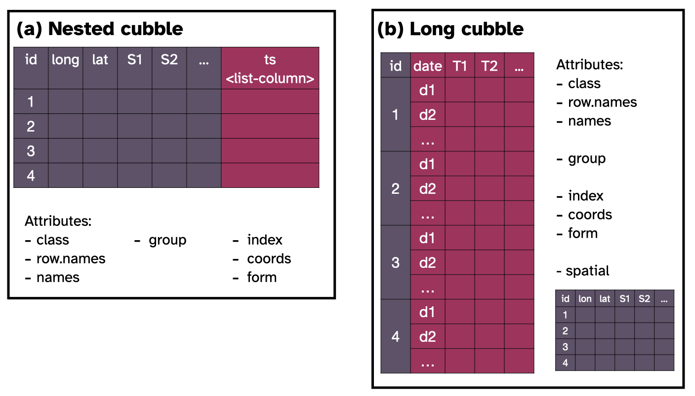

This vignette provides some details on the cubble class. Here is a diagram that summarises the attributes associated with a nested and long cubble:

Here the attributes can be divided into four categories:
class, row.names, names are attributes inherited from a tibble class,groups is inherited from rowwise_df or grouped_df a nested or long cubble is built,index, coords, and form are cubble specific attributes, andspatial is a special attribute that only the long cubble hasNow we look into these attributes through two examples, one for nested cubble and one for long cubble:
A nested cubble is built on top of a rowwise_df, which comes with the groups attributes, as well as the usual names, row.names, and class. Note that the class attribute contains the history class that a rowwise_df is built upon: tbl_df, tbl and data.frame. This is an example of the attributes for a nested cubble:
climate_small <- climate_flat %>%
filter(date %in% as.Date(c("2020-01-01", "2020-01-02", "2020-01-03", "2020-01-04")))
nested <- climate_small%>%
as_cubble(key = id, index = date, coords = c(long, lat))
nested
#> # cubble: id [5]: nested form
#> # bbox: [115.97, -32.94, 133.55, -12.42]
#> # temporal: date [date], prcp [dbl], tmax [dbl], tmin [dbl]
#> id lat long elev name wmo_id ts
#> <chr> <dbl> <dbl> <dbl> <chr> <dbl> <list>
#> 1 ASN00009021 -31.9 116. 15.4 perth airport 94610 <tibble [4 × 4]>
#> 2 ASN00010311 -31.9 117. 179 york 94623 <tibble [4 × 4]>
#> 3 ASN00010614 -32.9 117. 338 narrogin 94627 <tibble [4 × 4]>
#> 4 ASN00014015 -12.4 131. 30.4 darwin airport 94120 <tibble [4 × 4]>
#> 5 ASN00015131 -17.6 134. 220 elliott 94236 <tibble [4 × 4]>
attributes(nested)
#> $class
#> [1] "cubble_df" "rowwise_df" "tbl_df" "tbl" "data.frame"
#>
#> $row.names
#> [1] 1 2 3 4 5
#>
#> $groups
#> # A tibble: 5 × 2
#> id .rows
#> <chr> <list<int>>
#> 1 ASN00009021 [1]
#> 2 ASN00010311 [1]
#> 3 ASN00010614 [1]
#> 4 ASN00014015 [1]
#> 5 ASN00015131 [1]
#>
#> $names
#> [1] "id" "lat" "long" "elev" "name" "wmo_id" "ts"
#>
#> $index
#> [1] "date"
#> attr(,"ordered")
#> [1] TRUE
#>
#> $coords
#> [1] "long" "lat"
#>
#> $form
#> [1] "nested"In this example, four stations are recorded at four time points: 1st to 4th Jan 2020. The key specified is mapped to the groups while index and coords are stored as the variable name in a cubble. This attribute will be the same as key most of the time but a useful piece of information to record later in the hierarchical data structure.
The rowwise_df class uses a group attribute to ensure each row is in its own group and this structure makes it simpler to calculate on the list. For example calculating the number of non-raining day can be done by:
nested %>%
mutate(rain = sum(ts$prcp != 0, na.rm = TRUE))
#> # cubble: id [5]: nested form
#> # bbox: [115.97, -32.94, 133.55, -12.42]
#> # temporal: date [date], prcp [dbl], tmax [dbl], tmin [dbl]
#> id lat long elev name wmo_id ts rain
#> <chr> <dbl> <dbl> <dbl> <chr> <dbl> <list> <int>
#> 1 ASN00009021 -31.9 116. 15.4 perth airport 94610 <tibble [4 × 4]> 1
#> 2 ASN00010311 -31.9 117. 179 york 94623 <tibble [4 × 4]> 0
#> 3 ASN00010614 -32.9 117. 338 narrogin 94627 <tibble [4 × 4]> 0
#> 4 ASN00014015 -12.4 131. 30.4 darwin airport 94120 <tibble [4 × 4]> 2
#> 5 ASN00015131 -17.6 134. 220 elliott 94236 <tibble [4 × 4]> 3which matches the basic mutate style of calculation, so it is easier to remember than the purrr style syntax:
climate_small %>%
tidyr::nest(c(date, prcp, tmax, tmin)) %>%
mutate(rain = purrr::map_dbl(data, ~sum(.x$prcp != 0, na.rm= TRUE)))
#> # A tibble: 5 × 8
#> id lat long elev name wmo_id data rain
#> <chr> <dbl> <dbl> <dbl> <chr> <dbl> <list> <dbl>
#> 1 ASN00009021 -31.9 116. 15.4 perth airport 94610 <tibble [4 × 4]> 1
#> 2 ASN00010311 -31.9 117. 179 york 94623 <tibble [4 × 4]> 0
#> 3 ASN00010614 -32.9 117. 338 narrogin 94627 <tibble [4 × 4]> 0
#> 4 ASN00014015 -12.4 131. 30.4 darwin airport 94120 <tibble [4 × 4]> 2
#> 5 ASN00015131 -17.6 134. 220 elliott 94236 <tibble [4 × 4]> 3A long form cubble is built from the grouped_df class where observations from the same site forms a group. Below prints a long cubble along with its attributes:
long <- nested %>% face_temporal()
long
#> # cubble: date, id [5]: long form
#> # bbox: [115.97, -32.94, 133.55, -12.42]
#> # spatial: lat [dbl], long [dbl], elev [dbl], name [chr], wmo_id [dbl]
#> id date prcp tmax tmin
#> <chr> <date> <dbl> <dbl> <dbl>
#> 1 ASN00009021 2020-01-01 0 31.9 15.3
#> 2 ASN00009021 2020-01-02 0 24.9 16.4
#> 3 ASN00009021 2020-01-03 6 23.2 13
#> 4 ASN00009021 2020-01-04 0 28.4 12.4
#> 5 ASN00010311 2020-01-01 0 38 16.4
#> 6 ASN00010311 2020-01-02 0 30 15.5
#> 7 ASN00010311 2020-01-03 0 25.2 10.5
#> 8 ASN00010311 2020-01-04 0 26.3 7
#> 9 ASN00010614 2020-01-01 0 34 14
#> 10 ASN00010614 2020-01-02 0 27.5 15.2
#> 11 ASN00010614 2020-01-03 0 21 10.9
#> 12 ASN00010614 2020-01-04 0 24.9 6.5
#> 13 ASN00014015 2020-01-01 58 34.4 23.6
#> 14 ASN00014015 2020-01-02 32 34.5 25.9
#> 15 ASN00014015 2020-01-03 0 34.7 26.3
#> 16 ASN00014015 2020-01-04 0 35 26.6
#> 17 ASN00015131 2020-01-01 18 40.1 24.6
#> 18 ASN00015131 2020-01-02 32 40.6 27.6
#> 19 ASN00015131 2020-01-03 34 41.2 24
#> 20 ASN00015131 2020-01-04 0 40.9 26.8
attributes(long)
#> $class
#> [1] "cubble_df" "grouped_df" "tbl_df" "tbl" "data.frame"
#>
#> $row.names
#> [1] 1 2 3 4 5 6 7 8 9 10 11 12 13 14 15 16 17 18 19 20
#>
#> $names
#> [1] "id" "date" "prcp" "tmax" "tmin"
#>
#> $groups
#> # A tibble: 5 × 2
#> id .rows
#> <chr> <list<int>>
#> 1 ASN00009021 [4]
#> 2 ASN00010311 [4]
#> 3 ASN00010614 [4]
#> 4 ASN00014015 [4]
#> 5 ASN00015131 [4]
#>
#> $index
#> [1] "date"
#> attr(,"ordered")
#> [1] TRUE
#>
#> $spatial
#> # A tibble: 5 × 6
#> # Rowwise: id
#> id lat long elev name wmo_id
#> <chr> <dbl> <dbl> <dbl> <chr> <dbl>
#> 1 ASN00009021 -31.9 116. 15.4 perth airport 94610
#> 2 ASN00010311 -31.9 117. 179 york 94623
#> 3 ASN00010614 -32.9 117. 338 narrogin 94627
#> 4 ASN00014015 -12.4 131. 30.4 darwin airport 94120
#> 5 ASN00015131 -17.6 134. 220 elliott 94236
#>
#> $coords
#> [1] "long" "lat"
#>
#> $form
#> [1] "long"The spatial attribute records the time-invariant variables in the data, so that when switch back to the nested form, these variables won’t get lost.
Apart from the usual %@% or attr(DATA, "ATTRIBUTE") to extract class attributes, cubble provides functions with the corresponding attribute name for easier extraction: index(), key_vars(), key_data(), coords(), and spatial() can be used to extract the relevant component in both forms:
key_vars(long)
#> [1] "id"
key_data(long)
#> # A tibble: 5 × 2
#> id .rows
#> <chr> <list<int>>
#> 1 ASN00009021 [4]
#> 2 ASN00010311 [4]
#> 3 ASN00010614 [4]
#> 4 ASN00014015 [4]
#> 5 ASN00015131 [4]
spatial(long)
#> # A tibble: 5 × 6
#> # Rowwise: id
#> id lat long elev name wmo_id
#> <chr> <dbl> <dbl> <dbl> <chr> <dbl>
#> 1 ASN00009021 -31.9 116. 15.4 perth airport 94610
#> 2 ASN00010311 -31.9 117. 179 york 94623
#> 3 ASN00010614 -32.9 117. 338 narrogin 94627
#> 4 ASN00014015 -12.4 131. 30.4 darwin airport 94120
#> 5 ASN00015131 -17.6 134. 220 elliott 94236